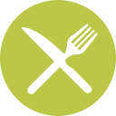

<article class="how-to-page">
    <ul class="how-to-list" style="list-style-type:none">
        <li><i class="fa fa-thumbs-up fa-lg"></i></li>
        <li class="list">Commit<br><span class="list-text">The first step is always the hardest.</span></li>
        <li><i class="fa fa-mobile  fa-lg"></i></li>
        <li class="list">Selfie<br><span class="list-text">Share your commitment on social media holding a sign like <a href="../../media/SE7ENFAST-Pledge-Sheet.pdf" alt="Se7en Fast Sign" target="_blank" class="list-text link-text">this</a>!</span></li>
        <li><i class="fa fa-search  fa-lg"></i></li>
        <li class="list">Locate and RSVP<br><span class="list-text">Find a SE7EN FEAST near you and reserve a seat at the table <a ui-sref="locate" alt="Se7en Feast Locate and RSVP" class="list-text link-text">here</a>.</span></li>
        <li></li>
        <li class="list">Fast<br><span class="list-text">Abstain from eating and drinking while the sun is up on 6/7/16.</span></li>
        <li><i class="fa fa-money  fa-lg"></i></li>
        <li class="list">Donate<br><span class="list-text">Give what you would have spent on food for the day to <a href="http://my.wfpusa.org/se7enfast16" alt="World Food Programme Link" target="_blank" class="list-text link-text">The World Food Programme</a> or a local food bank.</span></li>
        <li></li>
        <li class="list2" >Feast<br><span class="list-text">Attend the SE7EN FEAST in your area and meet Muslims in your community!</span></li>
    </ul>
</article>